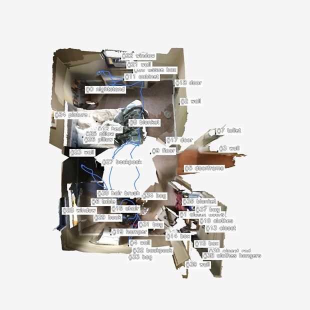
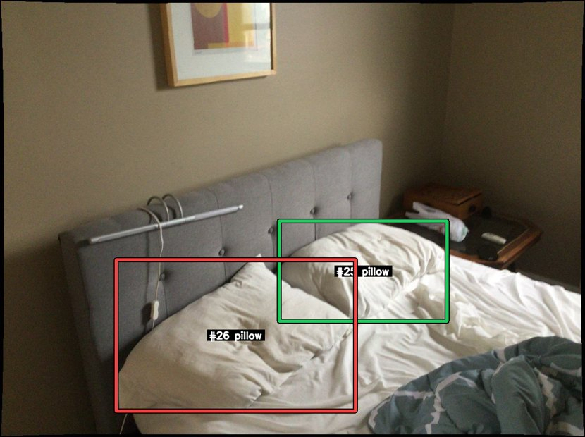
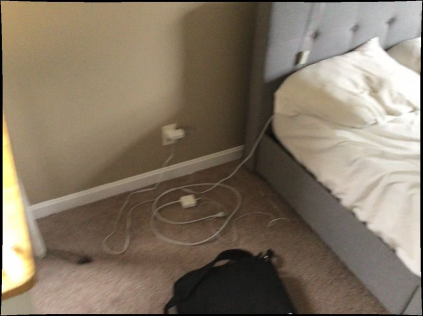
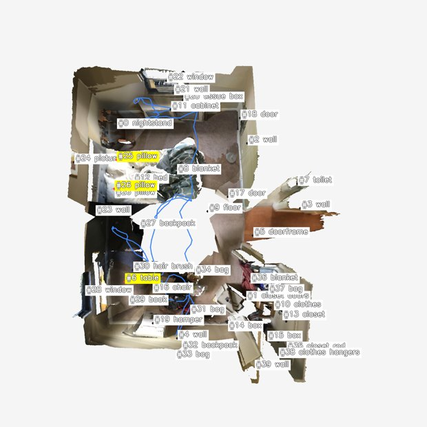
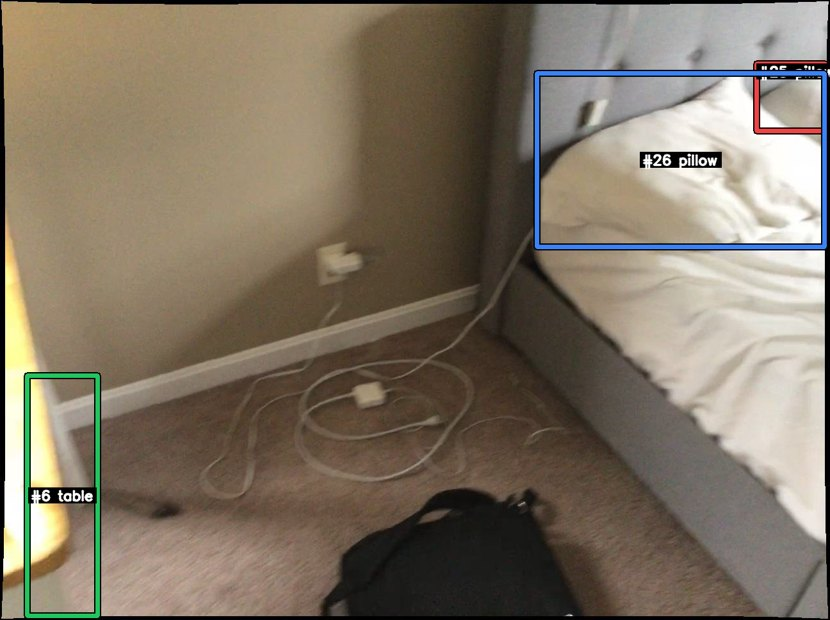

Run 001 · NR3D visual grounding (v9 catalog-first)
the pillow on the side near the kitchen table.
scannet/scene0699_00::26::40486
正确
GT#26
Selected#26
Confidence0.88
IoU1.0000
SplitEasy / View-Indep
Tool calls13
Turn 0 — Agent 看到的初始上下文（v9 catalog-first）
v9 的 build_user_message 只注入 BEV 图像 和 SceneCatalog 文字目录，不 注入任何第一人称关键帧。Agent 必须主动调用 selector / mark_frame_with_bbox（v9.1）或历史 trace 中的 view_keyframe 等工具才能拿到第一人称证据。

data/nr3d/scannet/scene0699_00/pack_nr3d_v9_catalog_first/bev/scene_bev_nr3d.pngSceneCatalog (`Proposals by category` 块的展开形式)
catalog 为空
Agent 调用栈（每个工具一张卡片）
卡片按真实工具调用顺序展开。tool_input 与 response_text 保留原文（已做长度截断），其它说明为中文。工具家族用左侧色条区分：setup catalog selector view mark bbox legacy reason final。
01 load_skill 加载 playbook 加载技能：scene-exploration-playbook
模型发起的工具输入
{
"skill_name": "scene-exploration-playbook"
}
工具返回（原文，已截断）
# Scene Exploration Playbook (shared, prerequisite)
You start each scene with two views: a BEV (top-down) with `#id category`
labels + camera trajectory, and a `SceneCatalog` text inventory. Neither
is first-person evidence — fetch first-person frames before finalising
any answer that depends on appearance, count, state, or relations.
## First move — `select_by_text` for rare-target / OOD queries, catalog for the rest
`select_by_text(query, k≤3)` runs Stage-1 query parsing and returns up
to 3 candidate first-person RGB frames in a single call when the query
can be cleanly parsed. The returned JSON lists each frame's
`visible_proposal_ids` + camera pose so you can decide which of the
≤3 frames is worth a closer look.
**Audit-informed routing** (see `docs/benchmark/nr3d/v9_1_select_by_text_audit_20260516.md`):
- **Use `select_by_text` first** when the target is rare (you don't see
the category in the BEV) or for natural QA queries like "where is the
kitchen counter". On hard / low-coverage targets it lifts hit@3 by
~31 pp over random.
- **Skip `select_by_text` and start with the catalog** when the query is
view-dependent ("facing X", "right of Y", "standing in the middle"),
uses negation ("does NOT have"), or names a fine-grained subtype
beyond the SceneCatalog categories. Stage-1 returns `no_evidence` on
~32 % of such queries and you waste a turn. Instead read the BEV +
Cat-B inventory and jump straight to `select_by_proposal` /
`select_by_region`.
- If `select_by_text` returns `frames: []` (empty), do **not** retry the
same query with bigger `k`; switch to `select_by_proposal` /
`select_by_region` on the candidate catalog IDs you can read from the
BEV.
## Refinement selectors (after the first batch)
Once `select_by_text` returned frames and you know which catalog IDs
you're tracking, the catalog-driven selectors are instant and inject
their own ≤3 RGB frames:
| Selector | When to use |
| --- | --- |
| `select_by_proposal(ids, require_all, k)` | Frames showing specific catalog IDs (e.g. after text returned wrong instance). |
| `select_by_frame_neighbor(anchor_frame_id, mode='temporal'\|'viewpoint_diverse')` | Expand around one good frame. |
| `select_by_region(region, region_type='bev_2d'\|'bbox_3d')` | A BEV cluster looks promising — fetch frames overlooking that region. |
| `select_by_coverage(method='obj_iou'\|'pose_depth', seen_frame_ids?)` | You need diverse coverage of unseen frames. |
All selectors cap `k` at 3. Image dedup is automatic: frames already
injected are listed with `already_seen=true` and not re-injected.
## Looking closer at one frame
- `mark_frame_with_bbox(frame_id, labels=?, ids=?)` — render a single
frame with high-contrast bounding boxes around the labels / ids you
named. Requires at least one of `labels` or `ids`. Use this when a
selector returned a frame and you want to verify the chosen catalog
entry against the actual pixels.
- `request_crops(frame_id, bbox_2d)` — pixel zoom into a region of a
frame you have already seen.
## Catalog queries (text-only)
- `list_scene_proposals(category=?, region_bev=?, limit=?)` — scene-wide.
- `list_frame_proposals(frame_id)` — what's visible in one frame.
- `inspect_proposal(proposal_id)` — proposal metadata + frames_appeared.
## BEV inspection
- `view_bev()` — re-inject the original full BEV.
- `view_bev(highlight=[#a, #b])` — re-render the same perspective BEV
with only those proposals labelled.
## Anti-patterns
- Answering from BEV labels alone. BEV is a map, not ground truth.
- Calling `mark_frame_with_bbox` on a frame you have not seen yet
(selectors already injected it; mark is for the "verify this one"
step).
- Calling more than two selectors before any `mark_frame_with_bbox` —
that means you are collecting candidates without ever verifying.
- `request_crops` before any selector — crops zoom a frame; the host
frame must already be in context.
## The loop
1. Pick the right first move (see the routing block at the top): for
rare-target / OOD queries call `select_by_text(query)`; for
view-dependent / catalog-explicit queries call `select_by_proposal` /
`select_by_region` on the IDs you read from the BEV + inventory.
2. Scan the ≤3 returned frames + the BEV. If `select_by_text` returned
`frames: []`, fall through to step 1's catalog branch.
3. `mark_frame_with_bbox` on **the** frame that looks decisive.
4. (Optional) `request_crops` for fine attributes; or refine with
another selector if step 3 was inconclusive.
5. `submit_final`.
02 select_by_proposal 按候选 id 搜帧 按 proposal_ids=[25, 26, 6] 搜帧：返回 3 帧 [0:000000-rgb.png, 1:000010-rgb.png, 2:000020-rgb.png]
模型发起的工具输入
{
"proposal_ids": [
25,
26,
6
],
"require_all": false,
"k": 3
}
工具返回（原文，已截断）
{"hypothesis_summary": "", "frames": [{"frame_id": 0, "visible_proposal_ids": [0, 8, 12, 24, 25, 26], "bev_xy": null, "camera_yaw": null, "selected_because": "select_by_proposal(proposal_ids=[25, 26, 6], require_all=False)", "image_path": "data/nr3d/scannet/scene0699_00/raw/000000-rgb.png", "already_seen": false}, {"frame_id": 1, "visible_proposal_ids": [0, 8, 12, 24, 25, 26], "bev_xy": null, "camera_yaw": null, "selected_because": "select_by_proposal(proposal_ids=[25, 26, 6], require_all=False)", "image_path": "data/nr3d/scannet/scene0699_00/raw/000010-rgb.png", "already_seen": false}, {"frame_id": 2, "visible_proposal_ids": [0, 8, 12, 24, 25, 26], "bev_xy": null, "camera_yaw": null, "selected_because": "select_by_proposal(proposal_ids=[25, 26, 6], require_all=False)", "image_path": "data/nr3d/scannet/scene0699_00/raw/000020-rgb.png", "already_seen": false}]}

data/nr3d/scannet/scene0699_00/raw/000000-rgb.png

data/nr3d/scannet/scene0699_00/raw/000010-rgb.png

data/nr3d/scannet/scene0699_00/raw/000020-rgb.png
03 load_skill 加载 playbook 加载技能：vg-grounding-playbook
模型发起的工具输入
{
"skill_name": "vg-grounding-playbook"
}
工具返回（原文，已截断）
# VG Grounding Playbook (v9.1)
Prerequisite: `load_skill('scene-exploration-playbook')` first.
You are grounding a natural-language referring expression to **one** proposal in
the SceneCatalog. The output must be a single `proposal_id` (or `-1` if the target
is genuinely absent from the catalog — OOD case).
## Standard flow
1. **Read the BEV image** and the `Proposals by category:` block in the task
message. Identify candidate `#id`s by category (e.g. "brown chair" → all
`chair` proposals).
2. **First move (audit-informed)** — pick one:
- If the BEV shows the candidate categories clearly and the query
references a relation / direction ("the chair on the right",
"facing the fridge", "between the beds"), go straight to
`select_by_proposal(proposal_ids=[candidate ids])`. On NR3D Stage-1
returns `no_evidence` on ~32 % of these and you save a turn.
- If the category is rare or the BEV does not have a confident
shortlist, `select_by_text(query)` is the right first move — it
runs Stage-1 parsing and returns ≤3 RGB frames in one call.
- See `docs/benchmark/nr3d/v9_1_select_by_text_audit_20260516.md` for
the audit data behind this routing.
3. **Verify the chosen candidate** with
`mark_frame_with_bbox(frame_id, ids=[#a, #b, …])` (or
`labels=['chair', …]`). This renders the frame with high-contrast bounding
boxes around the named catalog entries; pixels confirm which proposal the
referring expression matches.
4. **Disambiguate spatial relations** with `compare_proposals_spatial(
candidate_ids=[…], anchor_id=#x, relation='left_of'|'right_of'|'closer_to'|…)`
when the query involves a spatial relation.
5. **Submit** with `submit_final(payload={"proposal_id": <id>}, …)`. The
evidence-frame guard requires that at least one `mark_frame_with_bbox`
call covered the submitted proposal id.
## Tools at a glance
- `select_by_text(query, k=3, hidden_categories?)` — **first move**;
language → ≤3 RGB candidate frames.
- `select_by_proposal(proposal_ids, require_all=False, k=3)` — fetch
frames containing specific catalog IDs.
- `select_by_frame_neighbor(anchor_frame_id, mode='temporal'|'viewpoint_diverse')`.
- `select_by_region(region, region_type='bev_2d'|'bbox_3d')`.
- `select_by_coverage(method='obj_iou'|'pose_depth')`.
- `mark_frame_with_bbox(frame_id, labels|ids)` — high-contrast
annotated zoom; required before `submit_final` for VG (see
evidence_frame_guard).
- `list_frame_proposals(frame_id)`, `list_scene_proposals(...)`,
`inspect_proposal(id)` — text-only catalog queries.
- `view_bev(highlight=[ids])` — re-render BEV focused on subset.
- `compare_proposals_spatial(candidate_ids, anchor_id, relation)` —
spatial disambiguation (TADG-relevant).
## Guards (read this before submit)
- **TADG** (Target-Anchor Disambiguation Guard): if the query mentions an
anchor (e.g. "next to the kitchen counter"), TADG will block submission
unless `compare_proposals_spatial` proved the chosen proposal satisfies the
relation. If TADG fires, run the comparison and resubmit.
- **no_match_guard**: if selectors did not surface any candidate of the
queried category, submit `proposal_id=-1` (OOD).
- **evidence_frame_guard**: at least one `mark_frame_with_bbox` call whose
filter (`ids=` or `labels=`) covers the submitted proposal id must appear
in the trace. Plain RGB injection via a selector does not satisfy this
guard.
## OOD policy
If after exhaustive selectors + ≥3 `mark_frame_with_bbox` calls you cannot
locate the referent, submit `proposal_id=-1` with a rationale explaining what
categories / regions you searched. Do not invent an `id`.
## Anti-patterns
- Submitting based on BEV labels alone (no `mark_frame_with_bbox`).
- Calling `mark_frame_with_bbox` on a frame you have not seen yet (it must
come from a selector first).
- Calling more than two selectors before any `mark_frame_with_bbox` — that
means you are collecting candidates without ever verifying.
- Querying `request_crops` before any selector returned a host frame.
04 list_frame_proposals 查看某帧候选列表 frame 0 可见 6 个候选：#24 picture，#26 pillow，#12 bed，#25 pillow，#0 nightstand，#8 blanket
模型发起的工具输入
{
"frame_id": 0
}
工具返回（原文，已截断）
{"frame_id": 0, "visible_proposal_ids": [26, 25, 24, 12, 0, 8], "left_to_right": ["#24 picture", "#26 pillow", "#12 bed", "#25 pillow", "#0 nightstand", "#8 blanket"], "categories": {"26": "pillow", "25": "pillow", "24": "picture", "12": "bed", "0": "nightstand", "8": "blanket"}, "boxes_2d": {"26": [257, 575, 787, 910], "25": [618, 489, 990, 711], "24": [352, 8, 630, 185], "12": [138, 301, 1288, 962], "0": [851, 401, 1211, 586], "8": [809, 746, 1287, 961]}}
05 mark_frame_with_bbox 带框标注帧 (v9.1) 带框标注 · frame 0 · ids=[25, 26] · marked_file=frame_0_ids_25_26.png
模型发起的工具输入
{
"frame_id": 0,
"labels": [],
"ids": [
25,
26
]
}
工具返回（原文，已截断）
frame_id=0 mark image at data/nr3d/scannet/scene0699_00/pack_nr3d_v9_catalog_first/bev/filtered_marks/frame_0_ids_25_26.png; filtered_by={'labels': [], 'ids': [25, 26]}; visible_proposals=[26, 25]; categories=['pillow', 'pillow']; left_to_right=['26:pillow', '25:pillow']; boxes_2d={26: [257, 575, 787, 910], 25: [618, 489, 990, 711]}

data/nr3d/scannet/scene0699_00/pack_nr3d_v9_catalog_first/bev/filtered_marks/frame_0_ids_25_26.png
06 inspect_proposal 检查候选元数据 候选 #6（table），出现于 70 帧
模型发起的工具输入
{
"proposal_id": 6
}
工具返回（原文，已截断）
{"proposal_id": 6, "category": "table", "score": 1.0, "bbox_3d_9dof": [-1.5285806404851028, -1.462729231230265, 0.37543531856886836, 1.0662052383374845, 1.491524468351943, 0.9706476085546426, 0.21186716937261052, 0.01739653610789116, 0.2437050802554931], "frames_appeared": [44, 45, 46, 47, 48, 49, 50, 51, 52, 53, 54, 55, 56, 57, 58, 59, 60, 61, 62, 63, 64, 65, 66, 67, 68, 69, 70, 71, 72, 73, 74, 75, 76, 77, 78, 79, 80, 81, 82, 83, 84, 85, 86, 87, 88, 89, 90, 91, 92, 93, 94, 95, 96, 97, 98, 99, 100, 101, 102, 103, 104, 105, 106, 107, 108, 109, 110, 111, 112, 113], "source": "gt"}
07 inspect_proposal 检查候选元数据 候选 #25（pillow），出现于 34 帧
模型发起的工具输入
{
"proposal_id": 25
}
工具返回（原文，已截断）
{"proposal_id": 25, "category": "pillow", "score": 1.0, "bbox_3d_9dof": [-1.6474580074645653, 1.20870903038786, 0.5496661047221078, 0.478939067868161, 0.6183738327296768, 0.1635769310380072, 0.09331331127344684, -0.06319857446589028, 0.08732393369986953], "frames_appeared": [0, 1, 2, 3, 4, 5, 6, 7, 8, 9, 10, 11, 12, 35, 36, 37, 38, 39, 40, 41, 42, 43, 44, 174, 175, 176, 177, 178, 181, 182, 183, 184, 185, 186], "source": "gt"}
08 inspect_proposal 检查候选元数据 候选 #26（pillow），出现于 21 帧
模型发起的工具输入
{
"proposal_id": 26
}
工具返回（原文，已截断）
{"proposal_id": 26, "category": "pillow", "score": 1.0, "bbox_3d_9dof": [-1.6878678870675095, 0.5844339598106638, 0.5486636261309488, 0.5685781808376498, 0.741417387630952, 0.2015892219089538, -0.2931229457085481, 0.03618452326335331, 0.07163950294001363], "frames_appeared": [0, 1, 2, 3, 4, 5, 6, 7, 8, 9, 37, 38, 39, 40, 41, 42, 43, 44, 45, 46, 47], "source": "gt"}
09 select_by_proposal 按候选 id 搜帧 按 proposal_ids=[6, 25, 26] 搜帧：返回 1 帧 [44:000440-rgb.png]
模型发起的工具输入
{
"proposal_ids": [
6,
25,
26
],
"require_all": true,
"k": 3
}
工具返回（原文，已截断）
{"hypothesis_summary": "", "frames": [{"frame_id": 44, "visible_proposal_ids": [6, 12, 25, 26, 27], "bev_xy": null, "camera_yaw": null, "selected_because": "select_by_proposal(proposal_ids=[6, 25, 26], require_all=True)", "image_path": "data/nr3d/scannet/scene0699_00/raw/000440-rgb.png", "already_seen": false}]}

data/nr3d/scannet/scene0699_00/raw/000440-rgb.png
10 view_bev 查看 BEV BEV 重渲染 highlight=[6, 25, 26]
模型发起的工具输入
{
"highlight": [
6,
25,
26
]
}
工具返回（原文，已截断）
bev image at data/nr3d/scannet/scene0699_00/pack_nr3d_v9_catalog_first/bev/highlights/bev_h_6_25_26.png; highlight=[6, 25, 26]

data/nr3d/scannet/scene0699_00/pack_nr3d_v9_catalog_first/bev/highlights/bev_h_6_25_26.png
11 mark_frame_with_bbox 带框标注帧 (v9.1) 带框标注 · frame 44 · ids=[6, 25, 26] · marked_file=frame_44_ids_6_25_26.png
模型发起的工具输入
{
"frame_id": 44,
"labels": [],
"ids": [
6,
25,
26
]
}
工具返回（原文，已截断）
frame_id=44 mark image at data/nr3d/scannet/scene0699_00/pack_nr3d_v9_catalog_first/bev/filtered_marks/frame_44_ids_6_25_26.png; filtered_by={'labels': [], 'ids': [6, 25, 26]}; visible_proposals=[6, 26, 25]; categories=['table', 'pillow', 'pillow']; left_to_right=['6:table', '26:pillow', '25:pillow']; boxes_2d={6: [42, 586, 152, 961], 26: [838, 114, 1287, 385], 25: [1181, 99, 1288, 204]}

data/nr3d/scannet/scene0699_00/pack_nr3d_v9_catalog_first/bev/filtered_marks/frame_44_ids_6_25_26.png
12 submit_final 提交最终答案 提交 {'proposal_id': 26, 'confidence': 0.79}；理由：Selecting proposal 26. In verified frame 44, the table (#6) and both pillows are visible together; pillow #26 is the pillow immediately beside the table side, while pillow #25 sits farther right. Frame 0 confirms the two pillow candidates a
模型发起的工具输入
{
"payload": {
"proposal_id": 26,
"confidence": 0.79
},
"rationale": "Selecting proposal 26. In verified frame 44, the table (#6) and both pillows are visible together; pillow #26 is the pillow immediately beside the table side, while pillow #25 sits farther right. Frame 0 confirms the two pillow candidates and supports that #26 is the nearer/side pillow relative to the table. Therefore #26 best matches 'the pillow on the side near the kitchen table'.",
"evidence_refs": [],
"tadg_blocked": false,
"tadg_force_passed": false,
"tadg_top1_pid": null,
"tadg_submitted_pid": null,
"tadg_relation": null,
"tadg_anchor_id": null,
"tadg_subcase": null,
"tadg_ranked_ids": null,
"tadg_message": null,
"no_match_guard_blocked": false,
"no_match_guard_force_passed": false,
"no_match_guard_category_candidate_ids": null,
"no_match_guard_category_candidate_labels": null,
"no_match_guard_viewed_uninspected_ids": null,
"no_match_guard_viewed_uninspected_labels": null,
"no_match_guard_message": null,
"evidence_frame_guard_blocked": false,
"evidence_frame_guard_submitted_pid": 26,
"evidence_frame_guard_cited_frame_ids": [
44,
0
],
"evidence_frame_guard_visible_proposal_ids": null,
"evidence_frame_guard_visible_proposal_labels": null,
"evidence_frame_guard_relative_position_conflict": false,
"evidence_frame_guard_relative_position_direction": null,
"evidence_frame_guard_relative_position_alternatives": null,
"evidence_frame_guard_relative_position_alternative_labels": null,
"evidence_frame_guard_message": null
}
工具返回（原文，已截断）
submitted; rationale="Selecting proposal 26. In verified frame 44, the table (#6) and both pillows are visible together; pillow #26 is the pillow immediately beside the table side, while pillow #25 sits farther right. Frame 0 confirms the two pillow candidates and supports that #26 is the nearer/side pillow relative to the table. Therefore #26 best matches 'the pillow on the side near the kitchen table'."; evidence_refs=0
13 submit_final 提交最终答案 提交 {'proposal_id': 26, 'confidence': 0.88}；理由：After re-checking the newly injected frames (including the marked view of frame 0 and the BEV), proposal #26 remains the best match. In the marked frame 0, #26 is the left pillow and #25 is the right pillow. The BEV shows table #6 positione
模型发起的工具输入
{
"payload": {
"proposal_id": 26,
"confidence": 0.88
},
"rationale": "After re-checking the newly injected frames (including the marked view of frame 0 and the BEV), proposal #26 remains the best match. In the marked frame 0, #26 is the left pillow and #25 is the right pillow. The BEV shows table #6 positioned on the lower-left side of the bed/pillows cluster, making #26 the pillow on the side nearer the table, while #25 is farther from the table. The additional raw frames of the bed are consistent with this layout and do not change the disambiguation.",
"evidence_refs": [],
"tadg_blocked": false,
"tadg_force_passed": false,
"tadg_top1_pid": null,
"tadg_submitted_pid": null,
"tadg_relation": null,
"tadg_anchor_id": null,
"tadg_subcase": null,
"tadg_ranked_ids": null,
"tadg_message": null,
"no_match_guard_blocked": false,
"no_match_guard_force_passed": false,
"no_match_guard_category_candidate_ids": null,
"no_match_guard_category_candidate_labels": null,
"no_match_guard_viewed_uninspected_ids": null,
"no_match_guard_viewed_uninspected_labels": null,
"no_match_guard_message": null,
"evidence_frame_guard_blocked": false,
"evidence_frame_guard_submitted_pid": 26,
"evidence_frame_guard_cited_frame_ids": [
0
],
"evidence_frame_guard_visible_proposal_ids": null,
"evidence_frame_guard_visible_proposal_labels": null,
"evidence_frame_guard_relative_position_conflict": false,
"evidence_frame_guard_relative_position_direction": null,
"evidence_frame_guard_relative_position_alternatives": null,
"evidence_frame_guard_relative_position_alternative_labels": null,
"evidence_frame_guard_message": null
}
工具返回（原文，已截断）
submitted; rationale='After re-checking the newly injected frames (including the marked view of frame 0 and the BEV), proposal #26 remains the best match. In the marked frame 0, #26 is the left pillow and #25 is the right pillow. The BEV shows table #6 positioned on the lower-left side of the bed/pillows cluster, making #26 the pillow on the side nearer the table, while #25 is farther from the table. The additional raw frames of the bed are consistent with this layout and do not change the disambiguation.'; evidence_refs=0